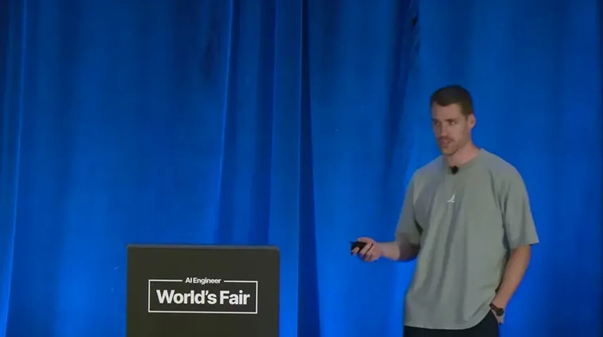
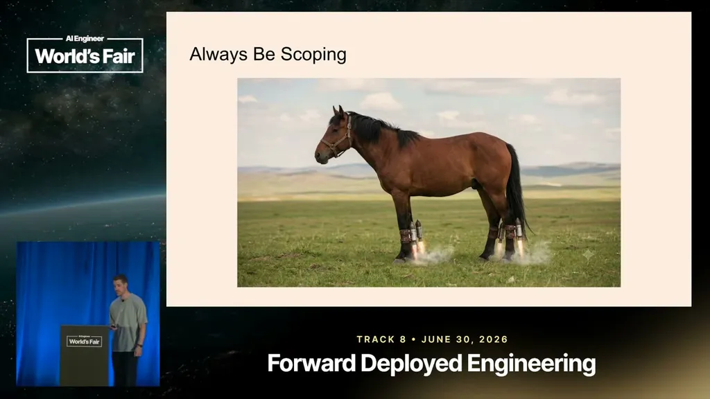
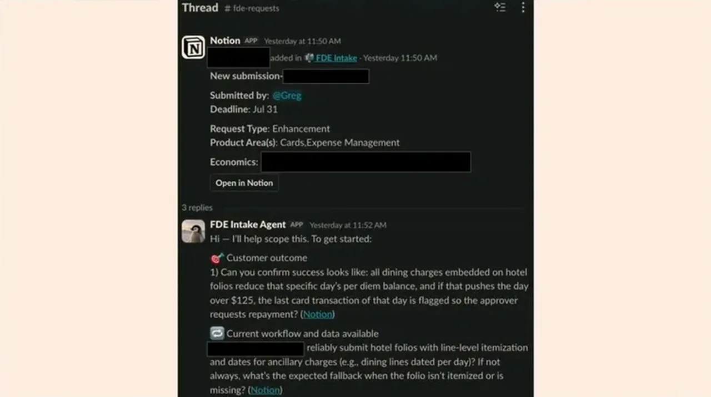

Mehr, a director of engineering, says Ramp's forward-deployed engineering org has grown from two engineers when he joined 2.5 years ago to about 30 today, spanning deployed engineering, developer API, and a new AI services line, with the stated goal of helping Ramp win upmarket enterprise customers.
“today, my org is about 30 engineers across four deployed developer API and our new AI services um business.”
▶ watch at 00:32
Mehr argues an FDE's job is not to say yes to every customer request but to interrogate the real driver behind it — for example, an urgent Friday-night ask for a custom SAP S/4HANA integration to close a deal, where the underlying urgency might be a sales rep's quota rather than the customer's actual need. He recounts a case where Ramp built a reimbursement feature for both iOS and Android before discovering the customer mandated iOS-only devices for its employees, wasting the Android engineering effort.
“an enterprise sales rep comes to us with an urgent request that this super important strategic logo is only going to close if we build out an SAP S/4HANA integration.”
▶ watch at 03:11“they only they they they require they mandate all of their employees to use iOS devices.”
▶ watch at 05:46
Ramp built an internal Notion-based agent that FDE-adjacent staff (account managers, solutions, sales) use to submit blockers; the agent asks clarifying questions before a human FDE gets involved. Mehr says reply latency dropped from hours or days to seconds within a couple of weeks of launch, and estimates the agent now saves roughly 20% of the time previously spent manually scoping requests.
“we found that it was like saving us a lot of time because, first of all, immediate like the latency of replies went from like hours or days to like, you know, seconds.”
▶ watch at 09:22“I I would say it's probably saved us like a large percentage, I don't know, 20% of the time that we'd spend on scoping out these requests.”
▶ watch at 09:53
Mehr argues frontier models can already one-shot medium-size features, making the last mile of implementation comparatively easy; the harder, still largely unsolved stage is the middle of the pipeline — gathering context and writing a well-shaped spec. He warns that scoping discipline without investment in this agent 'factory,' or vice versa, produces what he calls a 'token maxing slop cannon.'
“obviously like Frontier models can like one-shot medium-size features.”
▶ watch at 10:24“If you don't do a good job of scoping out requests or or building upon the principles of scoping things well, you're going to get a token maxing slop cannon.”
▶ watch at 12:27(ours) The 20% time-savings figure for the scoping agent is Mehr's own estimate ('I don't know, 20%') rather than a measured benchmark; treat it as directional.
| Stance | Claim | t |
|---|---|---|
| recommends | Mehr frames Ramp's FDE practice around two principles: always be scoping, and scale with tokens. | 02:10 |
| warns | Ramp built a reimbursement feature for both iOS and Android before learning the customer required iOS-only devices, wasting effort on the unneeded platform. | 05:46 |
| warns | An urgent Friday-night sales request for a custom SAP integration illustrates how apparent customer urgency can actually be driven by internal sales pressure rather than real need. | 03:11 |
| asserts | After launching a Notion-based scoping agent, reply latency to FDE requests dropped from hours or days to seconds within a couple of weeks. | 09:22 |
| asserts | Mehr estimates the scoping agent has saved roughly 20% of the time previously spent scoping incoming FDE requests. | 09:53 |
| asserts | Mehr says frontier models can already one-shot medium-size features, making the final implementation stage of the FDE pipeline comparatively easy. | 10:24 |
| asserts | Ramp's FDE-adjacent organization has grown to about 30 engineers spanning deployed engineering, developer API, and AI services. | 00:32 |
| warns | Without good scoping discipline, investing in agent automation alone produces what Mehr calls a 'token maxing slop cannon.' | 12:27 |
Machine-readable copy embedded in this page (script#ontology) and in the corpus ontology.